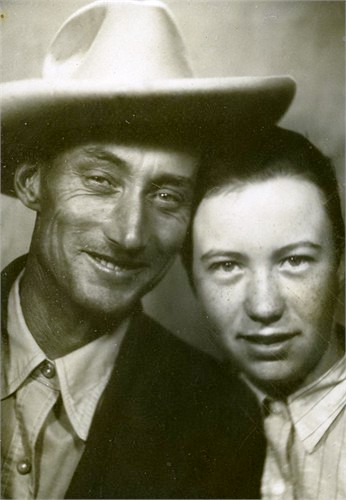

|
|
| 
Roy CARTER (1905-1980) |
Roy CARTER
BIRTHPLACE DISCREPANCY: The 1910 and 1920 U.S. Census lists his birthplace as Arkansas (as told by his father or grandmother). However, on Roy's Social Security Number application form signed and dated 12 Sep 1938 (at age 23), he wrote his birthplace as "Westville, Ohio". But then the California Death Records listed his birthplace as Arkansas.
-- Social Security Number application form dated 12 Sep 1938 (552-12-9664) Roy married Laura Beatrice COOPER, daughter of Dave Richard "Sam" COOPER and Ruth Newel EASTES, in 1926 in Pittsburg, Allegheny County, Pennsylvania. (Laura Beatrice COOPER was born on 26 Apr 1907 in Indian Territory, Pittsburg County, Oklahoma, died on 2 Dec 1928 in Pittsburg County, Oklahoma and was buried in Crowder Cemetery, Pittsburg County, Oklahoma.). The cause of her death was Kidney Failure. |
 General Notes:
General Notes: